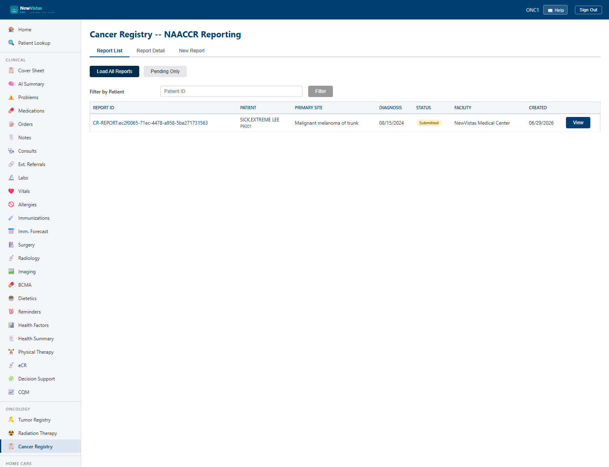

Cancer Registry (NAACCR)
Generate a NAACCR cancer abstract from a registered tumor, review it, and submit it to a state or central cancer registry. The screen tracks the abstract through its lifecycle, including accept and reject responses from the receiving registry.

Open the Cancer Registry
- In the sidebar, under Oncology, click Cancer Registry (or go to
/cancerregistry). - Confirm the patient in the patient bar; the patient should have a primary tumor registered in Oncology.
- Existing abstracts are listed with their status and any registry response.
Generate an abstract
- Click Generate Abstract and select the registered tumor to abstract.
- NewVistas populates a NAACCR abstract from the tumor's registry data (site, histology, stage, and demographics).
- Click Save. The abstract is created in a draft state.
Review and submit
- Review the generated abstract for completeness and accuracy.
- Click Submit to transmit the abstract to the configured state or central cancer registry.
- Record the registry's response — an accept closes the submission; a reject returns the abstract for correction and resubmission.
Certification context
Transmission to cancer registries supports ONC certification criterion
§170.315(f)(4) — Transmission to cancer registries.
NAACCR is the standard record layout for reporting cancer cases to public
health registries.
Who can edit
Generating and submitting abstracts requires the
ONCO MANAGER security key. The data is readable by any
clinician but editable only by oncology staff. For the demo, sign in as
oncologist ONC1 (password smythVista1).